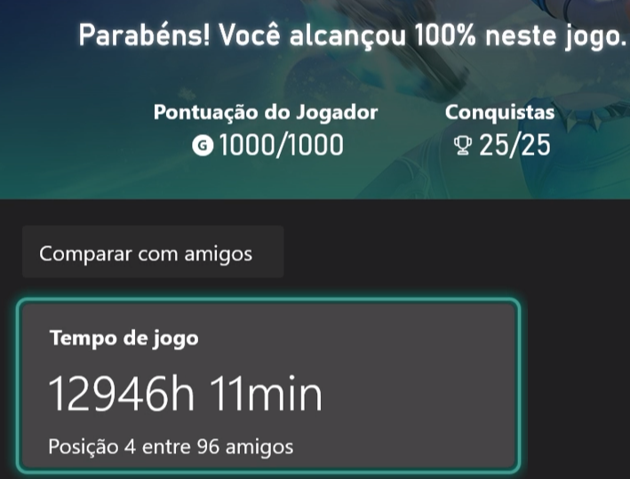

Você não precisa preencher este documento. Se preferir, copie as quatro perguntas e responda em um arquivo novo, no editor que você quiser, ou até à mão. O template existe só para organizar o raciocínio: o que vale é o conteúdo das suas respostas, não o formato em que elas chegam.
Você recebeu um caso com três partes: uma situação, a pergunta que a pessoa fez a uma IA e a resposta que a IA deu. A resposta não vem marcada como certa ou errada. O seu papel é o de investigador: ler com desconfiança, sair para conferir e chegar às suas próprias conclusões.
Responda às quatro perguntas com as suas palavras. Não existe resposta única: o que vale é o seu raciocínio e a sua verificação. Use como referência a tabela dos cinco tipos.
| Tipo | Comportamento Humano | Como Reconhecer |
|---|---|---|
| Alucinação factual | O blefe | Uma afirmação falsa com estrutura correta. Um dado, um nome, um número ou uma referência inventados, com aparência confiável. |
| Coerência sem verdade | O sofisma | Uma explicação que flui com lógica aparente, mas está conceitualmente errada. O erro está no raciocínio inteiro, não em um dado isolado. |
| Viés de corpus | O preconceito automático | O modelo reproduz padrões e desigualdades dos textos de treino, como se fossem um retrato completo da realidade. |
| Vagueza confortável | A evasão | O modelo evita uma posição clara mesmo quando ela era possível e necessária. Fala muito e não se compromete. |
| Ausência de contexto | A generalização | O modelo responde ao geral quando a pergunta era específica, por não saber seu país, sua norma, seu nível ou sua finalidade. |
Começaria conferindo as datas e os locais, pois é um dos tipos de alucinação mais comuns e fáceis de checar. Depois, faria as validações factuais do texto, como, por exemplo, o relato sobre o Prêmio Deutsch e a invenção do Demoiselle. Além disso, checaria todos os fatos, mesmo aqueles sobre os quais já tenho conhecimento prévio, como o relato do 14-Bis.
Acredito que identificamos uma alucinação de Viés de corpus, uma vez que são extremamente raros os casos em que inventores não patenteiam suas invenções. Em um mundo dominado pelo capitalismo, no qual o sistema de patentes foi inventado justamente para isso, a quantidade de inventores que patentearam suas invenções representa a grande e esmagadora maioria dos casos.
Assim, quando nos deparamos com um inventor que se recusava a patentear suas invenções por motivos ideológicos, o modelo não sabe disso, não porque distingue ideologias, mas sim porque a probabilidade de saída do token que geraria a resposta correta é ínfima em comparação com a situação descrita na alucinação.
Representa o preconceito automático, mas não no sentido ideológico da palavra, e sim no modo como a informação foi preconcebida. Devido ao fato de que o modelo foi treinado com tantos exemplos de inventores que patentearam suas invenções, no momento de gerar o texto:
"Um ponto interessante para a sua apresentação: Santos Dumont patenteou o projeto do 14-bis e passou a receber royalties pelo uso da tecnologia, o que o tornou um dos inventores mais bem-sucedidos financeiramente da sua época."
O modelo preconcebeu, por razões estatísticas e probabilísticas, que o mesmo ocorrera com Santos Dumont, mas a realidade factual é muito mais obscura e triste do que isso.
Investigação pessoal de alucinação e limites probabilísticos da IA em um domínio de conhecimento especializado e empírico do aluno.
Alguns pontos muito interessantes aconteceram durante o teste: primeiro, o modelo me perguntou o nome do jogo; segundo, mesmo deixando claro e explícito que não deveria ser utilizado nenhum tipo de acesso à internet, o modelo ainda assim o fez (apesar da restrição categórica inserida no prompt). E, mesmo assim, o modelo errou feio, errou rude. Está muito claro por que isso aconteceu:
O modelo JAMAIS saberia dessas especificidades porque as nuances de compensação mecânica de rede não estão descritas em nenhum corpus tradicional. Trata-se de um conhecimento empírico e tácito que poucos possuem, consolidado na prática e vivência real dentro do jogo:
